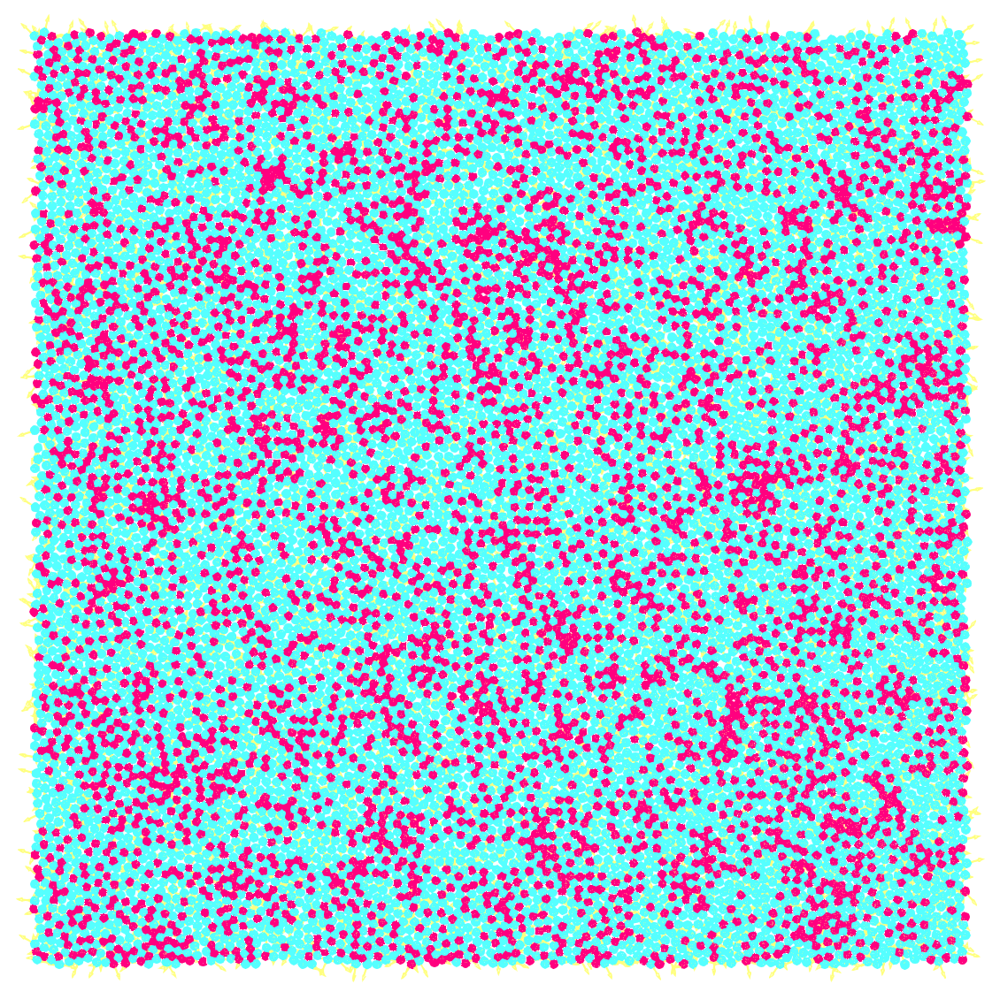

Active matter consists of systems—like swarming bacteria or synthetic self-propelled particles—that consume energy to move on their own. This internal "engine", often chemical reactions, keeps the material far from equilibrium. They break time-reversal symmetry; if you filmed them and played the movie backward, the physics would look fundamentally different.
However, when these active units become densely packed—as seen in cell monolayers in our own bodies—they begin to "jam" together. This creates slow relaxation dynamics, where the material becomes sluggish and develops memory of its past state, much like a liquid cooling into a solid glass. The movement of one cell becomes restricted by its neighbors, leading to a slow, collective crawl despite the energy being spent.
My research explores how these two opposing physics—the constant drive of individual activity and the collective slow dynamics—interact to determine the behavior of the material as a whole. By developing new theoretical frameworks and computer simulations, I investigate novel aspects of such a system, such as negative elasticity and viscosity.